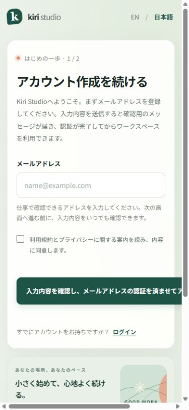
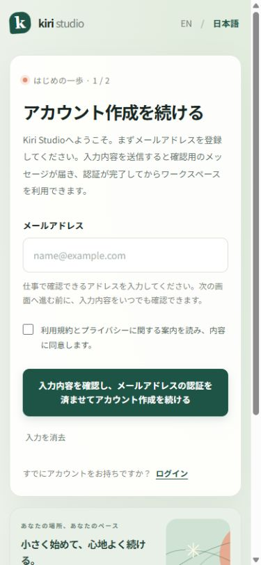
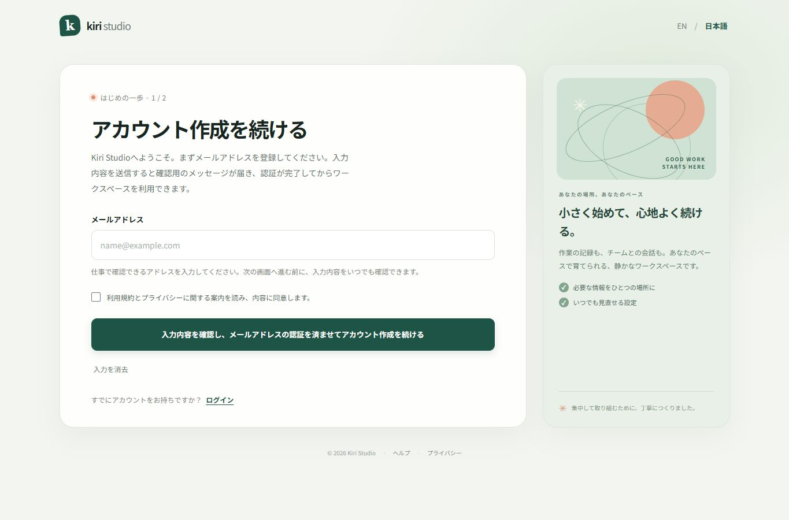

Reproduce the failure
Identify the button and action-row rules that make long localized text overflow on a narrow screen.
SELF-INITIATED CASE STUDY · WEB UI
A Japanese button label pushed a signup form beyond the screen. A focused CSS repair kept the full message visible—and the form usable in Japanese and English.
Fictional Kiri Studio interface · HTML / CSS / JavaScript · No client data
01 / THE VISIBLE DIFFERENCE
Actual browser captures of the same Japanese screen, at the same narrow viewport. The repair changes the layout, preserving the wording.

A fixed minimum button width and a non-wrapping action row force horizontal overflow.

The button text wraps, the actions can reflow, and the page fits the available width.
Select either image to view the original capture. The screenshots are evidence from the completed mock project.
02 / A FOCUSED REPAIR
Identify the button and action-row rules that make long localized text overflow on a narrow screen.
Allow the label and action row to wrap. Remove the page’s minimum-width constraint. Stack the supporting card below the form on narrow screens.
Check both languages, keyboard activation, input errors, confirmation feedback and reset behavior after the repair.
03 / CHECKED, WITH A DEFINED SCOPE
The completed mock project combined browser measurements, real key presses and saved visual evidence.
No horizontal page overflow in either language at the three tested narrow and desktop viewport settings.
Verified in the tested conditions36 additional Japanese and English cases passed, covering focus, activation with Enter and Space where appropriate, and form behavior.
AI-operated browser checksMissing email, malformed email and missing consent blocked confirmation. Three additional checks confirmed English browser prompts and focus.
English Edge checks performed by the ownerOriginal layout checks used 320, 390 and 1365 CSS-pixel viewport settings, with Japanese and English tested at each. These are recorded test conditions, not a claim of coverage on every device.
Layout and the 36 additional keyboard cases were checked by AI through the in-app browser. The three English-browser error checks were performed by the owner in Microsoft Edge with English (United Kingdom) UI; screenshots and reported outcomes were reviewed against the conditions. They are separate evidence sources.
This was not a full accessibility audit, an automated CI test suite, or an all-browser/device certification. Browser-provided validation prompts follow the browser’s language, independently of the page’s EN / 日本語 switch.

04 / EXPLORE THE RESULT
Switch between Japanese and English, try the form, and follow the keyboard focus. Use a sample address such as demo@example.com.
No account is created. No email is sent. Sign-in, help and privacy links are placeholders.
PROJECT CONTEXT
A small UI defect taken through reproduction, scoped repair, verification and documented handoff. This is a self-initiated simulation using a fictional product, not a paid client engagement.
I set the scope and acceptance conditions, reviewed the results and limitations, performed the additional English Edge checks, and approved the final files. AI assisted with implementation, browser checks and documentation.
The accepted deliverables are the HTML, CSS and JavaScript files used in the demo.